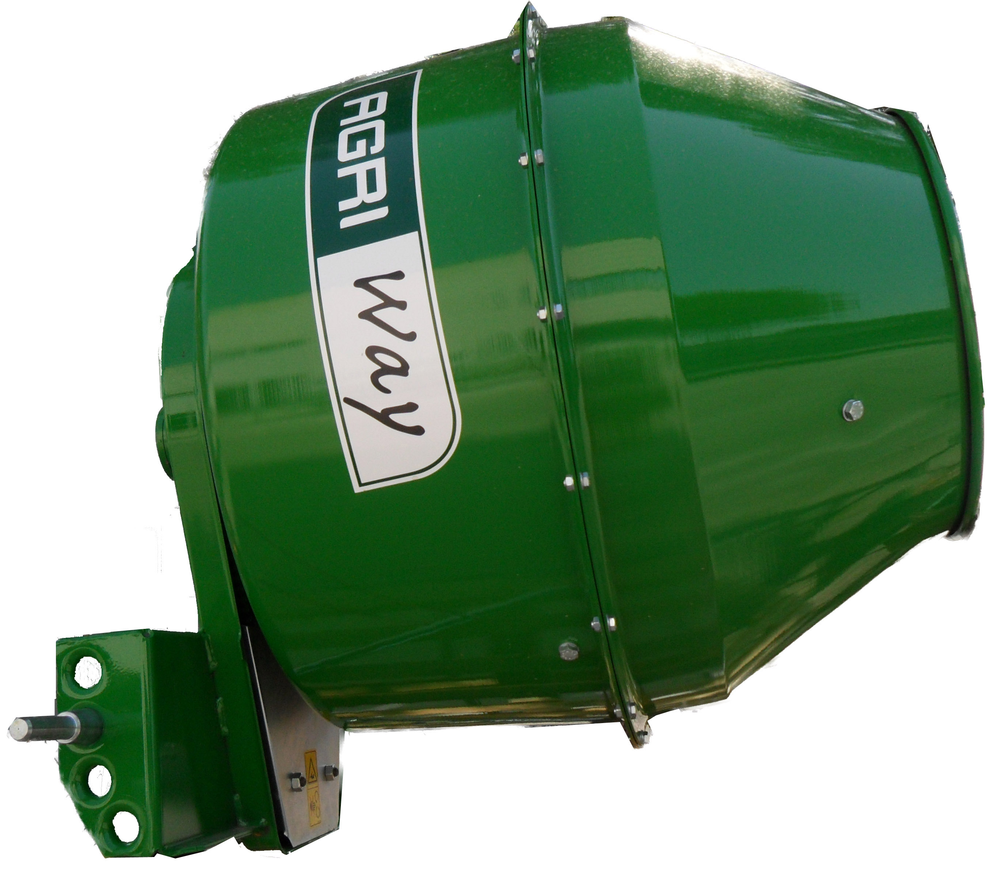

For preparing concrete, mixing cement, sand and gravel and water .


For sowing large seeds such as corn, sunflower, soya, green beans, sorghum, etc.


Since 1802, GB Group is specialist in tillage equipment and has become a worldwide leading company.
With 5 factories in France, 1 in Germany and 1 in Italy, GB Group is exporting implements in more than 65 countries and the quality of its products is renowned all over the farming world.
As part of its development, the group decided in 2009 to create a new range of products dedicated to tractors between 40 hp and 140 hp.
The goal is to offer simple implements but with a strong focus on quality and reliability for demanding customers in emerging countries.

Lat., lon.: 43.482243, 13.182024